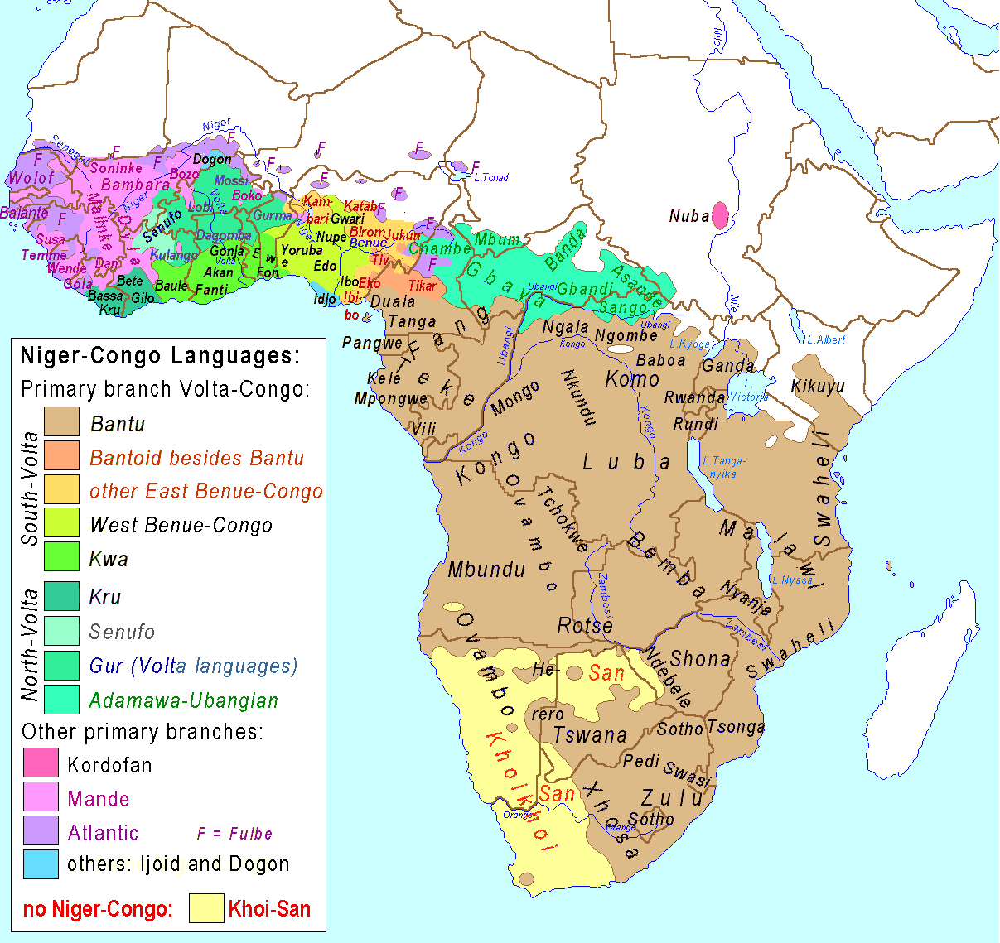
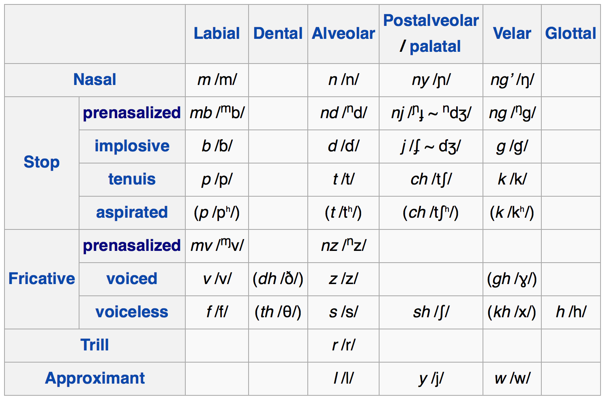
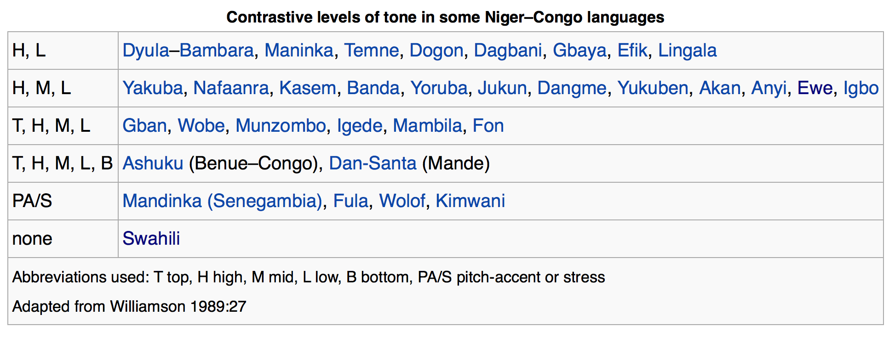
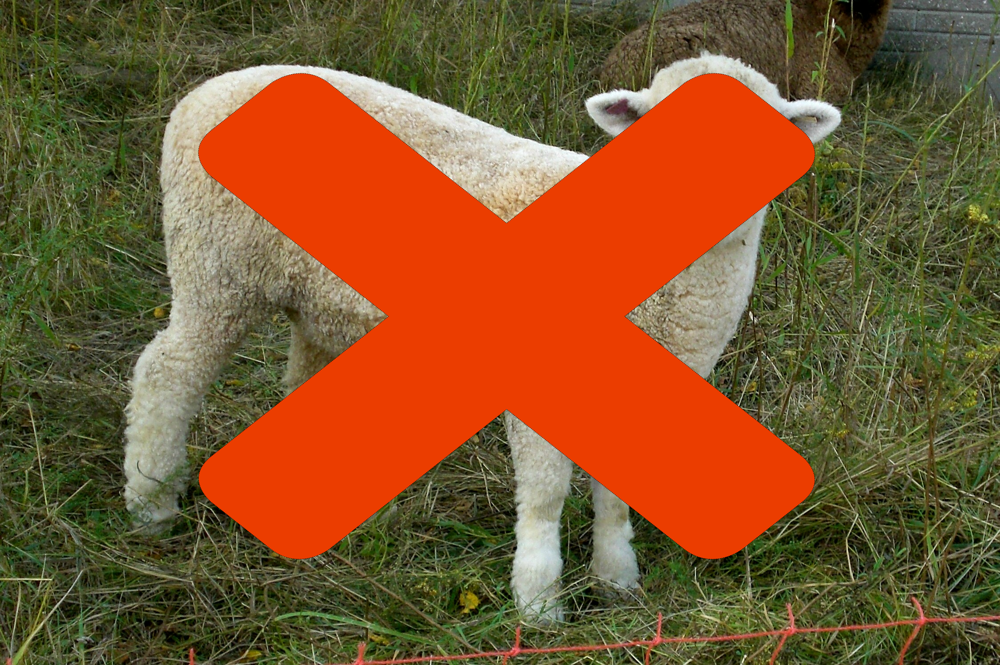
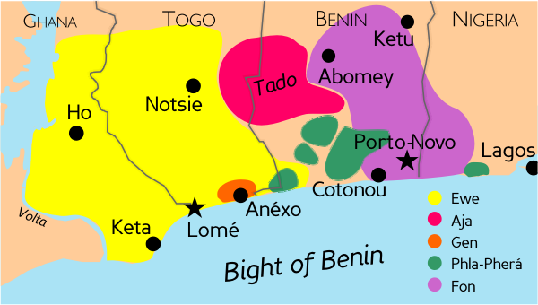

<lang>Zulu</lang><br><ldata>Niger-Congo:Bantu - Southern Africa</ldata> <iframe data-autoplay width="840" height="690" src="http://www.youtube.com/embed/WJdHofDwlwg"></iframe> Ladysmith Black Mambazo - Lelilungelo Elakho --- # Niger-Congo Languages ### LING 1020 - Will Styler --- ### Administrative Notes * Monday, we'll talk a bit more about the test * Last call for exam accommodations and early-takings. * For Friday, study the features of each language family * Maybe Use [the handy review sheet Will made this morning because he loves you all in a professional and teacherly sort of way](http://savethevowels.org/world/FamilyReview.pdf) --- ### I'll let the Pereltsvaig reading handle Khoisan * ... but you should watch some videos of [San](https://www.youtube.com/watch?v=W6WO5XabD-s), [Khoe Khoe](https://www.youtube.com/watch?v=NKEiUHoSAtU), and [Hazda](https://www.youtube.com/watch?v=NN7liLYhlxE) * Because these are awesome languages --- ## Today's Agenda * Serial Verb Constructions! * Niger-Congo! * The Bantu Languages * Ewe --- # Serial Verb Constructions! --- ### Serial Verb Construction A phenomenon where multiple verbs act together to express a single and composite verbal meaning. --- <lang>Baule</lang><br><ldata>Niger-Congo - Côte d'Ivoire</ldata> *O-a-fa i swa n a-kle mi* he-ANT-take his house DEF ANT-show me ‘He has shown me his house’ * **'Take' and 'Show' are used to form a combined meaning!** --- <lang>Igbo</lang><br><ldata>Niger-Congo - Nigeria</ldata> *o ti-wa-ra et́eré a* he hit-split.open-TENSE plate the ‘He shattered the plate’ * **'hit' + 'split-open' == 'shattered'** --- ### Properties of SVCs * Multiple verbs are used, but only a single combined meaning is expressed * All verbs share the agent and object * All verbs share the same temporal marking * The meaning often has to be paraphrased in translation --- <lang>Taba</lang><br><ldata>Austronesian - Indonesia</ldata> *n-babas welik n-mot do* 3sg-bite pig 3sg-die REAL 'It bit the pig dead' * **English lacks a verb for "bite until death"** --- <lang>Alamblak</lang><br><ldata>Sepik (Papuan) - Papua New Guinea</ldata> *miyt ritm muh-hambray-an-m* tree insects climb-search:for-1sg-3pl ‘I climbed the tree searching for insects’ * **'climb' and 'search' are combined here, but not in translation!** --- ### Often, SVCs take the place of single verbs in other languages --- <lang>Tetun Dili</lang><br><ldata>Austronesian - Timor</ldata> *labele fo ́ sai lia ne’e* neg.can give exit voice this ‘You can’t reveal this matter!’ * **'Give+Exit' with 'voice' expresses "reveal"** --- ### Let's play "Serial Verb Construction or not!" --- **Language name hidden!** acwe alɔ rwot 1sg+fat+hab 1sg+exceed+hab king ‘I am fatter than the king’ (lit. I-fat I-exceed king) * ... Same arguments, combined meaning. **This is an SVC!** --- The last example was from... <lang>Lango</lang><br><ldata>Nilo-Saharan - Uganda/South Sudan</ldata> --- **Language name hidden!** 'Hit the store, buy some fruit, and break this $100?' * 'hit' has different arguments than 'buy', 'break'. Also lots of other syntactic baggage. **Not an SVC** --- (That was English) --- **Language name hidden!** Teenage Mutant Ninja Turtles di-a ren-a jalak-a Michael Bay Teenage Mutant Ninja Turtles produce-3sg desecrate-3sg make.terrible-3sg Michael Bay 'Michael Bay produced "Teenage Mutant Ninja Turtles" poorly' * Multiple verbs contributing their meanings to a single mix? **Yep! SVC!** --- Yeah, made that last one up * <small>(although the rest of the examples from this section have been from ‘Serial Verb Constructions: A cross-linguistic typology’ by Sasha Aikhenvald and Bob Dixon. 2006)</small> --- ### SVCs are found all around the world * Common in Papuan, Austronesian, Amazonian, and Nilo-Saharan languages * They're particularly common in... --- # Niger-Congo Languages! --- ### Niger-Congo * This is a top-level language family * 85% of Africa's population speak a N-C language! * 600 million people * The largest family in the world in terms of number of languages (1514) * Very diverse, with lots of sub-families ---  --- ### Features of Niger-Congo Languages * Phun Phonetic Pheatures * Prenasalized Consonants, Labio-velar articulations, Nasalized Vowels, Tone, ATR Harmony * Agglutinative Morphology * SVO (mostly) * Serial Verb Constructions * Noun classes! --- ## Phonetic Features of Niger-Congo --- ### Prenasalized Consonants Nasal->Consonant sequences that act like a single sound * These are most common in the Bantu subgroup --- <lang>Swahili</lang><br><ldata>Niger-Congo:Bantu - Southern Africa</ldata>  --- These Nd-mb clusters are often used to sound "exotic" --- <img class="big" src="lotwimg/relic.jpg"> --- > "Mbwun - This carving is a representation of the mad god Mbwun, possibly carved by the Kothoga tribe of the Upper Amazon basin. This savage god, also known as He Who Walks On All Fours, was much feared by the other indigenous tribes of the area." - Relic, Preston and Child * # Nope. --- (Guaraní is the only language in Amazonas which we know uses prenasalized stops, and that's down towards Paraguay) --- (Nerd-rage aside...) --- ### Labio-Velar Articulations Making a stop with simultaneous gestures with the lips and back of the tongue --- <lang>Ewe</lang><br><ldata>Niger-Congo - Togo and Ghana</ldata> <img src="lotwimg/eweconsonants.png"> --- <lang>Ewe</lang><br><ldata>Niger-Congo - Togo and Ghana</ldata> * Ewe is a **Gbe** language * /eβegbe gbɔgblɔ/ - "Speaking Ewe" * /dzetugbe/ - "Beautiful" * /ele nyaɡblɔɡblɔ vivi tõ/ - "She's telling an exciting/interesting story" * "vivi" is a French borrowing --- ### Contrastive Nasality When nasality during the vowel changes the meaning of the word --- <lang>French</lang><br><ldata>IE:Italic - All over</ldata> *beau* (/bo/) - "beautiful" *bon* (/bõ/) - "good" *tas* (/ta/) - "heap" *temps* (/tã/) - "weather" --- ### Will is making a vowel pair. Is it Oral-Nasal, or Nasal-Oral? A) Oral then Nasal B) Nasal then Oral --- (This is Will's dissertation topic. **Do not** ask him about Nasalized vowels unless you're prepared for some serious nerding.) --- ### Tone  * <small>(Thanks, Wikipedia!)</small> --- ### ATR Harmony Where all vowels in the word have the same tongue root position. * Been there, done that, got the /ti ʃiɹt/. --- ## Grammatical Features of Niger-Congo <img class="big" src="humorimg/grammartime.jpg"> <!-- .element: class="fragment" --> --- ### Agglutinative Morphology * 'Nuff said --- ### SVO Word Order * Oddly familiar --- ### Serial Verb Constructions * Been there, done that, go select try.on purchase-PAST t-shirt --- ### Noun Classes! * Niger-Congo languages, especially Bantu, have really rich systems of grammatical gender and noun class * The Bantu languages are claimed to have 22 total noun classes, not present in all of them --- <lang>Zande</lang><br><ldata>Niger-Congo:Zande - Congo</ldata> 1. Human (Male) - "Man" 2. Human (Female) - "Wife" 3. Animate - "Beast" 4. Other - "House" --- <lang>Swahili</lang><br><ldata>Niger-Congo:Bantu - East Africa</ldata> M-Wa: * nouns of people that start with M- in singular and WA- in plural * other nouns of people * wanyama[animals] * ndege [birds] * wadudu[insects] * samaki[fish] --- <lang>Swahili</lang><br><ldata>Niger-Congo:Bantu - East Africa</ldata> Ji-Ma: * manufactured products, natural or built places, abstract or concrete concepts * sehemu za mwili [parts of the body] * atunda na vitu vya kawaida [fruits and natural objects] --- <lang>Swahili</lang><br><ldata>Niger-Congo:Bantu - East Africa</ldata> U - U: * concrete nouns with various plurals * uncountable nouns, with no plural form * nouns that are mostly formed from adjectives, nominals, or verbal roots * names of countries --- (For more Swahili noun classes [check this out](https://www2.ku.edu/~kiswahili/pdfs/Lesson_09.pdf)) --- ### So, we can only cover a few languages --- --- ### The Bantu Languages * Technically they're "Niger-Congo:Atlantic-Congo:Benue-Congo:Southern Bantoid:Bantu", but we just say "Bantu" * Comparatively well-studied, for African languages * Bantu languages took over many Khoisan-speaking populations * This is the "Bantu Expansion" * Prominent languages: * Swahili (140m speakers, kind of) * Shona (~15m speakers) * Zulu (~10m speakers) * Rwanda-Rundi (~13m speakers) * Xhosa (~8m speakers), and lots more * Several hundred languages (we can't agree on how many) * We subdivide them into different zones based on geography --- <img class="big" src="lotwimg/bantuzones.png"> --- ... What do you mean "140 million Swahili speakers, kind of"? * ### Swahili is what's called a "Lingua Franca" --- ### *Lingua Franca* A language used for communication across different groups in an area --- ### Swahili is what's called a "Lingua Franca" * Only around 5 million people speak Swahili as a first language * ... but more than 140 million speak it throughout Southeast Africa * Most Swahili speakers only use it when talking to people who don't speak their native language * For many people, it contaminates or eventually replaces the native language --- <lang>Swahili</lang><br><ldata>Niger-Congo:Bantu - Southeast Africa</ldata> <iframe data-autoplay width="840" height="690" src="http://www.youtube.com/embed/KVLWkCErIZ8"></iframe> --- <lang>Shona</lang><br><ldata>Niger-Congo:Bantu - Zimbabwe and Zambia </ldata> <iframe data-autoplay width="840" height="690" src="http://www.youtube.com/embed/l969E-dvqqg"></iframe> --- ### We've borrowed a lot of Bantu * Conga * Chimpanzee * Marimba * Simba - Swahili for "lion" * Impala - Zulu * Jenga - Swahili for "build" * Boogie-Woogie (*maybe*) --- <img class="big" src="lotwimg/ubuntu.png"> * 'Ubuntu' is a Bantu term roughly meaning 'kindness' or 'humanity towards others' --- ### Let's look at one other Niger-Congo language --- <lang>Ewe</lang><br><ldata>Niger-Congo - Togo and Ghana</ldata> <iframe data-autoplay width="840" height="690" src="http://www.youtube.com/embed/Fj0Mbavr950"></iframe> --- ### Ewe is pronounced /eβe/ * Sounds kind of like "Hey Way", but without the "h" --- <img class="big" src="lotwimg/ewesheep.jpg"> ---  --- ### Ewe (Ewegbe) * Niger-Congo, spoken by ~3.5m people, mostly in Ghana and Togo * Part of the Gbe subgroup of Niger-Congo --- <section data-background="lotwimg/africa_languages.jpg"></section> ---  --- ### Ewe (Ewegbe) Niger-Congo, spoken by ~3.5m people, mostly in Ghana, Togo, and Benin Part of the Gbe subgroup of Niger-Congo * Serial Verb Constructions! * SVO * **No** interesting noun classes * Labio-Velars, Contrastive Nasality, Level tones --- <lang>Ewe</lang><br><ldata>Niger-Congo - Togo and Ghana</ldata> * tó 'mountain' (High tone) * tǒ 'mortar' (Rising tone) * tò 'buffalo' (Low tone) --- ### We haven't even scraped the surface of African languages <img class="big" src="lotwimg/africa_languages.jpg"> * ... but you totally should, after this class. They're awesome. --- ### Wrapping up * Serial Verb Constructions are when multiple verbs combine to have a single meaning. * Niger-Congo is diverse, and has lots of fun features * Features which you should know * The Bantu Languages are very common throughout Southern Africa * ... and they're growing! * Ewe is an awesome language * Africa has *massive* linguistic diversity --- ## In Recitation: Exam Review, part one! --- ## Next time: Exam Overview, and English. Oh, English. <correct>No reading.</correct> --- <huge>Thank you!</huge>